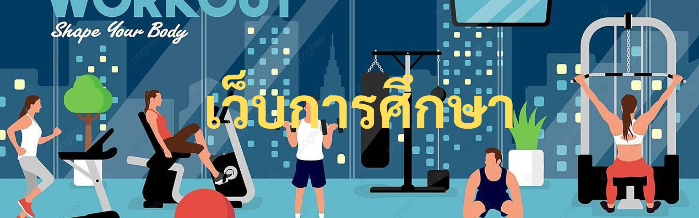

หน้าแรก
การออกกำลังกายมีหลายรูปแบบ ผู้คนมักเลือกออกกำลังกายเฉพาะที่ตนเองสนใจ อย่างไรก็ตาม การออกกำลังกายให้ครบทุกรูปแบบจะช่วยเสริมสร้างสมรรถภาพร่างกายทุกด้านให้ดีขึ้น โดยการออกกำลังกายแบ่งออกเป็น 4 ประเภทหลัก ได้แก่
1.การออกกำลังกายแบบแอโรบิก (Aerobic Exercise)
การออกกำลังกายประเภทนี้ถือว่าสำคัญต่อการทำงานของร่างกาย โดยช่วยให้อัตราการเต้นของหัวใจและการหายใจดีขึ้น ช่วยขยายผนังหลอดเลือด ลดความดันโลหิต เผาผลาญไขมันส่วนเกินในร่างกาย ลดระดับน้ำตาลในเลือด ลดอาการอักเสบ และเพิ่มระดับไขมันดี ทั้งนี้ การออกกำลังกายแบบแอโรบิกควบคู่กับการลดน้ำหนักยังช่วยลดระดับคอเลสเตอรอล ควรทำกิจกรรมต่อเนื่องกันอย่างน้อยวันละ 30 นาที หรือสัปดาห์ละ 150 นาที เช่น เดินเร็ว ว่ายน้ำ จ็อกกิ้ง ปั่นจักรยาน หรือทำกิจกรรมเข้าจังหวะ อย่างไรก็ตาม การออกกำลังกายแบบแอโรบิกควรอยู่ในขอบเขตที่เหมาะสม ไม่ควรหักโหมจนหายใจไม่ทัน เวียนศีรษะ เจ็บหรือแน่นหน้าอก หรือรู้สึกแสบร้อนกลางทรวงอก ทั้งนี้ ควรอบอุ่นร่างกายหรือคลายกล้ามเนื้อทุกครั้ง จิบน้ำระหว่างออกกำลังกายให้เพียงพอ ส่วนผู้ที่มีปัญหาสุขภาพบางอย่าง เช่น ป่วยเป็นโรคหัวใจวาย หรือโรคไต ควรจำกัดปริมาณของเหลวตามแพทย์สั่ง ไม่ควรดื่มน้ำขณะออกกำลังกายมากเกินไป อีกทั้งควรแต่งตัวให้เหมาะสมกับสภาพอากาศในกรณีที่ออกกำลังกลางแจ้ง และไม่ออกกำลังในที่ที่อากาศหนาวหรือร้อนเกินไป เนื่องจากอาจเป็นลมแดด หากอากาศร้อนมาก หรืออุณหภูมิร่างกายลดต่ำลงในกรณีที่อากาศหนาวจัด
2.การออกกำลังแบบฝึกกล้ามเนื้อ (Strenght Training)
ร่างกายจะสูญเสียมวลกล้ามเนื้อตามอายุที่มากขึ้น การออกกำลังฝึกกล้ามเนื้อจะช่วยสร้างกล้ามเนื้อที่สูญเสียไปได้ โดยสามารถใช้อุปกรณ์สำหรับฝึกกล้ามเนื้อ ยางยืดสำหรับออกกำลังกาย หรือของใช้ต่าง ๆ ภายในบ้านมาประยุกต์สำหรับฝึกกล้ามเนื้อ ทั้งนี้ ควรบริหารกล้ามเนื้อมัดใหญ่สัปดาห์ละ 2 วันหรือมากกว่านั้น และฝึกกล้ามเนื้อครั้งละประมาณ 30 นาที โดยห้ามฝึกกล้ามเนื้อกลุ่มเดียวกันติดกัน 2 วัน การออกกำลังชนิดนี้จะช่วยให้กล้ามเนื้อแข็งแรง กระตุ้นการเจริญเติบโตของกระดูก ลดน้ำตาลในเลือด ช่วยควบคุมน้ำหนัก ช่วยจัดท่าทางร่างกายและการทรงตัว รวมทั้งลดอาการตึงหรือปวดบริเวณหลังส่วนล่างและข้อต่อ อย่างไรก็ตาม การออกกำลังฝึกกล้ามเนื้อควรคำนึงถึงความปลอดภัยต่อสุขภาพเป็นสำคัญซึ่งทำได้ ดังนี้
~ควรเริ่มยกเวทหรือดัมเบลที่มีน้ำหนักประมาณ 0.5–1 กิโลกรัม เพื่อให้ร่างกายปรับตัวได้ โดยเริ่มจากน้ำหนักเบาก่อน แล้วค่อยเพิ่มน้ำหนักขึ้น เนื่องจากการเริ่มฝึกด้วยอุปกรณ์ที่มีน้ำหนักมากเกินไปจะทำให้บาดเจ็บได้
~ค่อย ๆ เพิ่มน้ำหนักให้มากขึ้น เพื่อพัฒนาสมรรถภาพในการฝึกกล้ามเนื้อ
~อุปกรณ์ที่ใช้ฝึกกล้ามเนื้อควรมีน้ำหนักที่ผู้ฝึกสามารถบริหารกล้ามเนื้อในแต่ละเซตได้อย่างน้อย 8 ครั้ง ไม่ควรมีน้ำหนักมากเกินไปจนไม่สามารถฝึกครบจำนวนครั้งในแต่ละเซต
~ควรฝึกกล้ามเนื้อแต่ละท่า โดยเริ่มยกหรือออกแรงฝึก 3 วินาที ค้างไว้ 1 วินาที และกลับมาอยู่ท่าเริ่มต้นอีก 3 วินาที ทั้งนี้ไม่ควรทิ้งอุปกรณ์ทันที แต่ควรผ่อนลงช้า ๆ
~ควรฝึกกล้ามเนื้อแต่ละท่าให้ได้ประมาณ 10–15 ครั้ง หากทำได้ไม่ครบ อาจทำเท่าที่ได้ก่อน แล้วค่อยเพิ่มจำนวนมากขึ้น
~ไม่ควรกลั้นลมหายใจขณะฝึกกล้ามเนื้อ เนื่องจากอาจทำให้ความดันโลหิตเปลี่ยนแปลง โดยเฉพาะผู้ที่มีปัญหาสุขภาพหัวใจ
~ควรหายใจสม่ำเสมอขณะออกกำลัง โดยหายใจเข้าทางจมูก และหายใจออกทางปาก หรือหายใจเข้าและออกทั้งทางจมูกและปากได้ในกรณีที่รู้สึกหายใจไม่สะดวก ทั้งนี้ ควรหายใจออกเมื่อออกแรงฝึก และหายใจเข้าเมื่อผ่อนแรงลง
~ควรออกกำลังในแต่ละท่าอย่างช้า ๆ และถูกจุดที่บริหาร ไม่ควรรีบจนเกินไป เพื่อป้องกันการได้รับบาดเจ็บ
~ไม่ควรเกร็งข้อต่อแขนหรือขาขณะอยู่ในท่าเกร็งกล้ามเนื้อที่ฝึก
~อาการปวดและเมื่อยล้ากล้ามเนื้ออาจปรากฏประมาณ 2–3 วัน หลังจากฝึกกล้ามเนื้อ ซึ่งอาการเหล่านี้จะหายไปหลังจากออกกำลังกายซ้ำมาสักประมาณ 2–3 สัปดาห์ นอกจากนี้ จะยกท่าออกกำลังฝึกกล้ามเนื้อบางส่วนมาประกอบ ดังนี้
~ท่าบริหารกล้ามเนื้อหัวไหล่ด้านหน้า (Front Arm Raise)เริ่มต้นยืนตรง แยกเท้าให้กว้างประมาณหัวไหล่ ถือดัมเบลไว้ข้างลำตัว โดยหันฝ่ามือไปด้านหลัง
~อุปกรณ์ที่ใช้ฝึกกล้ามเนื้อควรมีน้ำหนักที่ผู้ฝึกสามารถบริหารกล้ามเนื้อในแต่ละเซตได้อย่างน้อย 8 ครั้ง ไม่ควรมีน้ำหนักมากเกินไปจนไม่สามารถฝึกครบจำนวนครั้งในแต่ละเซต จากนั้นหายใจออกพร้อมกับเหยียดแขนทั้งสองให้ตรง ยกขึ้นมาข้างหน้าให้อยู่ระดับอก ค้างไว้ 1 วินาที แล้วหายใจเข้าพร้อมกับลดแขนลงช้า ๆ ทำซ้ำเซตละ 10–15 ครั้ง
~ท่าบริหารหน้าแขนด้วยยางยืด (Arm Curl)นั่งบนเก้าอี้ ฝ่าเท้าราบไปบนพื้น โดยแยกเท้าให้กว้างเท่าหัวไหล่ วางยางยืดสำหรับออกกำลังกายไว้ใต้เท้าทั้ง 2 ข้าง ให้ปลายยางยืดแต่ละข้างเท่ากัน จับปลายยางยืดไว้ โดยหงายฝ่ามือเข้าหาลำตัวและให้ข้อศอกอยู่ข้างลำตัว หายใจเข้าช้า ๆ จากนั้นหายใจออกพร้อมกับงอศอกให้มือเข้ามาใกล้หัวไหล่ ค้างไว้ 1 วินาที หายใจเข้าแล้วลดแขนกลับไปท่าเดิมช้า ๆ ทำซ้ำเช่นนี้เซตละ เริ่มต้นยืนตรงและจับพนักเก้าอี้ด้านหลังไว้ จากนั้นค่อย ๆ เขย่งส้นเท้าขึ้นมาให้มากที่สุด โดยทำช้า ๆ ทำซ้ำเช่นนี้ประมาณ 5 ครั้ง หากต้องการเพิ่มความยากในการฝึก อาจลองทำโดยไม่ต้องจับพนักเก้าอี้~ท่าสควอท (Squat)ยืนตรง แยกเท้าให้กว้างเท่าไหล่ แขนอยู่ข้างลำตัว จากนั้นค่อย ๆ ย่อสะโพกและงอเข่า โดยให้ลดก้นต่ำลงประมาณ 8 นิ้ว เหมือนกำลังนั่งเก้าอี้ ทิ้งน้ำหนักลงที่ส้นเท้า ทั้งนี้ อาจยื่นแขนไปข้างหน้าเพื่อช่วยทรงตัว และหลังตรงเสมอ แล้วค่อย ๆ กลับไปอยู่ท่าเริ่มต้น โดยเกร็งก้นไว้ขณะที่กลับมาอยู่ในท่ายืน เพื่อช่วยทรงตัวให้ดีขึ้น ทำซ้ำประมาณ 8–12 ครั้ง ผู้ที่เริ่มฝึกท่านี้ อาจลองฝึกกับเก้าอี้ โดยนั่งตรงขอบที่นั่งของเก้าอี้ แยกขาให้กว้างเท่าสะโพก จากนั้น เกร็งหน้าท้องพร้อมกับยืนขึ้น แล้วค่อยนั่งลงกลับไปที่เก้าอี้ช้า ๆ ส่วนผู้ที่ต้องการเพิ่มความยากในการฝึก ควรฝึกสควอท โดยกดสะโพกให้ต่ำกว่าเดิม
~ท่าบริหารน่อง (Calf Raises) เริ่มต้นยืนตรงและจับพนักเก้าอี้ด้านหลังไว้ จากนั้นค่อย ๆ เขย่งส้นเท้าขึ้นมาให้มากที่สุด โดยทำช้า ๆ ทำซ้ำเช่นนี้ประมาณ 5 ครั้ง หากต้องการเพิ่มความยากในการฝึก อาจลองทำโดยไม่ต้องจับพนักเก้าอี้
~ท่าสควอท (Squat) ยืนตรง แยกเท้าให้กว้างเท่าไหล่ แขนอยู่ข้างลำตัว จากนั้นค่อย ๆ ย่อสะโพกและงอเข่า โดยให้ลดก้นต่ำลงประมาณ 8 นิ้ว เหมือนกำลังนั่งเก้าอี้ ทิ้งน้ำหนักลงที่ส้นเท้า ทั้งนี้ อาจยื่นแขนไปข้างหน้าเพื่อช่วยทรงตัว และหลังตรงเสมอ แล้วค่อย ๆ กลับไปอยู่ท่าเริ่มต้น โดยเกร็งก้นไว้ขณะที่กลับมาอยู่ในท่ายืน เพื่อช่วยทรงตัวให้ดีขึ้น ทำซ้ำประมาณ 8–12 ครั้ง ผู้ที่เริ่มฝึกท่านี้ อาจลองฝึกกับเก้าอี้ โดยนั่งตรงขอบที่นั่งของเก้าอี้ แยกขาให้กว้างเท่าสะโพก จากนั้น เกร็งหน้าท้องพร้อมกับยืนขึ้น แล้วค่อยนั่งลงกลับไปที่เก้าอี้ช้า ๆ ส่วนผู้ที่ต้องการเพิ่มความยากในการฝึก ควรฝึกสควอท โดยกดสะโพกให้ต่ำกว่าเดิม
การยืดเส้น (Stretching)
เมื่ออายุมากขึ้น อาจทำให้สูญเสียความยืดหยุ่นของกล้ามเนื้อและเส้นเอ็น ซึ่งส่งผลให้เกิดอาการปวดกล้ามเนื้อหรือเป็นตะคริว กล้ามเนื้อ ถูกทำลาย ตึงกล้ามเนื้อ ปวดข้อต่อ หรือหกล้มได้ การยืดเหยียดกล้ามเนื้อเป็นประจำจะช่วยให้กล้ามเนื้อยืดหยุ่นมากขึ้น ส่งผลให้เคลื่อนไหวได้ดีและลดอาการปวดหรือเสี่ยงได้รับบาดเจ็บน้อยลง การยืดเส้นควรทำทุกวันหรืออย่างน้อยสัปดาห์ละ 3–4 ครั้ง โดยยืดเส้นกล้ามเนื้อช้า ๆ พยายามยืดให้ได้มากที่สุด ค้างไว้ 10–30 วินาที แล้วค่อยผ่อน หายใจ และทำซ้ำ ทั้งนี้ ควรอบอุ่นร่างกายยืดเส้น เพื่อให้เลือดและออกซิเจนไหลเวียนไปที่กล้ามเนื้อ จากนั้นจึงเริ่มบริหารร่างกายด้วยท่ายืดเส้นตามส่วนต่าง ๆ ของร่างกาย ได้แก่ น่อง ต้นขาด้านหลังหรือแฮมสตริง (Hamstrings) กล้ามเนื้อที่งอข้อต่อสะโพก (Hip Flexors) กล้ามเนื้อต้นขา (Quadriceps) กล้ามเนื้อที่ไหล่ คอ และหลังส่วนล่าง โดยท่ายืดเส้นที่ช่วยยืดเส้นในบางส่วนต่าง ๆ ของร่างกายมีดังนี้
~ท่ายืดเส้นคอ
ท่านี้สามารถทำได้ขณะนั่งหรือยืน เริ่มต้นโดยยืนหรือนั่งให้เท้าวางราบบนพื้น หลังตรงยืดไหล่ จากนั้นค่อย ๆ หันศีรษะไปด้านขวาจนรู้สึกตึงเล็กน้อย ระวังไม่ให้ศีรษะเอียงไปข้างหน้าหรือข้างหลัง ควรตั้งศีรษะให้ตรงในท่าที่รู้สึกสบาย ทำค้างไว้ประมาณ 10–30 วินาที แล้วหันศีรษะมาทางซ้าย ค้างไว้อีก 10–30 วินาที ทำซ้ำเช่นนี้ 3–5 ครั้ง
~ท่ายืดเส้นไหล่และแขนส่วนบน
ยืนตรง กางขาให้กว้างเท่าไหล่ ใช้มือขวาจับปลายผ้าเช็ดตัว จากนั้นยกแขนขึ้นและงอแขนเพื่อตวัดผ้าเช็ดตัวไปด้าน
ยืนตรง กางขาให้กว้างเท่าไหล่ ใช้มือขวาจับปลายผ้าเช็ดตัว จากนั้นยกแขนขึ้นและงอแขนเพื่อตวัดผ้าเช็ดตัวไปด้านหลัง ใช้มือซ้ายเอื้อมไปด้านหลังแล้วจับปลายผ้าเช็ดตัวอีกด้าน พร้อมกับออกแรงดึงผ้าเช็ดตัวเพื่อยืดเส้นไหล่ขวา ทำซ้ำเช่นนี้อย่างน้อย 3–5 ครั้ง แล้วสลับทำอีกข้าง
~ท่ายืดเส้นน่อง
ยืนตรง ดันมือไว้ที่กำแพง จากนั้นงอเข่าขวาแล้วก้าวเท้าซ้ายไปด้านหลังให้ห่างอย่างน้อย 1 ฟุต แล้วยืดให้น่องซ้ายตึง โดยพยายามเหยียดขาซ้ายให้ตรงมากที่สุด โดยฝ่าเท้าทั้ง 2 ข้างต้องวางราบไปบนพื้น สลับทำเช่นนี้กับขาขวา
~ท่ายืดเส้นหัวเข่า (Single Knee Rotation)
นอนราบไปบนพื้น เหยียดขาตรง โดยให้ไหล่ทั้ง 2 ข้างแนบไปกับพื้น จากนั้นงอเข่าซ้าย โดยวางฝ่าเท้าซ้ายไว้บนต้นขาขวาเลยเข่าขึ้นมาเล็กน้อย เกร็งกล้ามเนื้อหน้าท้อง แล้วใช้มือขวาจับเข่าซ้ายดึงไปทางขวาให้รู้สึกตึงเพียงเล็กน้อย ไม่รู้สึกเจ็บที่เข่า รวมทั้งหันหน้าไปอีกด้าน เพื่อช่วยดึงเข่าให้ตึงได้มากขึ้น ทำค้างไว้ประมาณ 10–30 วินาที แล้วค่อยกลับไปท่าเริ่มต้น สลับทำเช่นนี้กับอีกข้าง
3.การออกกำลังเสริมการทรงตัว (Balance Exercise)
ผู้ที่มีอายุมากขึ้นจะสูญเสียระบบที่ช่วยเรื่องการทรงตัวของร่างกาย ได้แก่ การมองเห็น หูชั้นใน หรือกล้ามเนื้อขาและข้อต่อ การออกกำลังเสริมการทรงตัวจะช่วยให้ร่างกายทรงตัวได้ดีขึ้น อีกทั้งยังป้องกันการหกล้ม โดยทั่วไปแล้ว การออกกำลังชนิดนี้ทำได้บ่อยตามต้องการ เนื่องจากการออกกำลังเสริมการทรงตัวบางท่าก็รวมอยู่ในการฝึกกล้ามเนื้อร่างกายส่วนล่างบางท่าด้วย ทั้งนี้ การออกกำลังเสริมการทรงตัวสามารถฝึกได้เอง ซึ่งท่าออกกำลังเสริมการทรงตัวที่น่าสนใจมีดังนี้
~ยืนยกขาเดียว (Standing Knee Lift)
ยืนตรงเท้าชิด มือเท้าเอว จากนั้นยกขางอเข่าขึ้นมาหนึ่งข้าง โดยให้ต้นขาขนานกับพื้น ทำค้างไว้ อาจกางแขนเพื่อช่่วยทรงตัวได้ แล้วค่อยลดขาลงไปอยู่ท่าเริ่มต้น ทำซ้ำเช่นนี้ประมาณ 3–5 ครั้ง แล้วสลับทำอีกข้าง ขณะที่ยกขาขึ้นมานั้นควรหลังตรง เกร็งกล้ามเนื้อหน้าท้อง ก้น และหายใจตามสบาย ผู้ที่เริ่มฝึกอาจใช้มือข้างหนึ่งหาที่ยึดไว้ก่อน หากต้องการเพิ่มความยาก ให้ผ่อนขาลงแต่ไม่แตะพื้น แล้วยกขา กลับขึ้นมาอีกครั้ง
~ท่าฝึกเดินทรงตัว (Balance Walk)
ยืนกางแขนยกขึ้นมาให้สูงเท่าหัวไหล่ เงยหน้ามองตรงไปด้านหน้า จากนั้นเดินไปตามแนวเส้นตรง โดยให้เท้าข้างหนึ่งอยู่ด้านหน้าเท้าอีกข้าง ขณะที่เดินให้ยกขาหลังขึ้นมา ค้างไว้ 1 วินาที ก่อนก้าวต่อไป ทำซ้ำเช่นนี้ 20 ก้าว
~ท่าเดินต่อเท้าเป็นเส้นตรง (Heel-To-Toe Walk)
ยืนตรง ก้าวเท้าขวาไปข้างหน้า โดยให้ส้นเท้าขวาต่อกับปลายเท้าซ้าย จากนั้นก้าวเท้าซ้ายไปวางต่อด้านหน้าปลายเท้าขวา ระหว่างที่เดินควรมองตรงไปข้างหน้า ทำเช่นนี้ให้ได้อย่างน้อย 5 ก้าว
เริ่มต้นออกกำลังกายอย่างถูกต้อง
การเตรียมตัวสำหรับเริ่มออกกำลังกายถือเป็นสิ่งสำคัญ เนื่องจากจะช่วยให้ผู้ฝึกตั้งเป้าหมายสำหรับออกกำลังกายได้อย่างชัดเจน กระตุ้นตัวเองให้ออกกำลังกายอยู่เสมอ อีกทั้งยังออกกำลังกายได้อย่างถูกต้องและส่งผลดีต่อสุขภาพ ผู้ฝึกลองเริ่มต้นออกกำลังกาย ดังนี้
1. ระบุกิจวัตรประจำวันที่เกี่ยวกับการออกกำลังกาย
ผู้ฝึกที่เริ่มต้นออกกำลังกายควรเริ่มสำรวจว่าตนเองออกกำลังกายสัปดาห์ละกี่วัน ใช้เวลาในการออกกำลังกายหรือทำกิจกรรมที่เคลื่อนไหวร่างกายแต่ละครั้งนานเท่าไหร่ รวมทั้งระบุกิจกรรมที่กระตุ้นให้ร่างกายเคลื่อนไหว การระบุกิจวัตรดังกล่าวจะช่วยให้ผู้ฝึกรู้ว่าตนเองควรเริ่มต้นออกกกำลังกายที่เหมาะสมอย่างไร อีกทั้งยังเป็นข้อมูลในการวางแผนสำหรับออกกำลังกายต่อไปด้วย
2. ตั้งเป้าหมายในการออกกำลังกาย
การตั้งเป้าหมายในการออกกำลังกายจะช่วยให้ผู้ฝึกสามารถออกกำลังได้ตรงตามความต้องการมากขึ้น เบื้องต้นควรพิจารณาว่าจะตั้งเป้าหมายออกกำลังกายในระยะสั้นหรือระยะยาว ตั้งเป้าที่ทำได้และเห็นผล รวมทั้งหมั่นตรวจสอบเป้าหมายของตนเองอย่างสม่ำเสมอ การตั้งเป้าหมายระยะสั้นจะช่วยให้ผู้ฝึกเคลื่อนไหวร่างกายอย่างสม่ำเสมอในการดำเนินชีวิตประจำวันด้วย
ผู้ที่เริ่มต้นออกกำลังกายอาจสอดแทรกกิจกรรมดังกล่าวเข้าไปในกิจวัตรที่จำเป็นต้องทำในแต่ละวัน ส่วนผู้ที่ออกกำลังกายเป็นประจำอยู่แล้วอาจเพิ่มระดับของการเคลื่อนไหวหรือออกกำลังกาย เช่น เปลี่ยนจากเดินเร็วเป็นวิ่งจ็อกกิ้ง หรือเพิ่มน้ำหนักดัมเบลเพื่อฝึกกล้ามเนื้อ การทำตามเป้าหมายระยะสั้นได้สำเร็จจะช่วยให้ผู้ฝึกมั่นใจและเริ่มตั้งเป้าหมายระยะยาว ทั้งนี้ การตั้งเป้าหมายระยะยาวควรตั้งเป้าไว้ที่ 6 เดือน 1 ปี หรือ 2 ปี นับจากที่ช่วงเวลาที่ระบุเป้าหมาย
3. เขียนแผนการออกกำลังกาย
แผนการออกกำลังกายควรมีพื้นฐานมาจากเป้าหมายที่ชัดเจน โดยเลือกประเภทกิจกรรมและระบุเหตุผล ช่วงเวลา รวมทั้งสถานที่ที่ต้องทำกิจกรรมดังกล่าว ทั้งนี้ ควรเลือกกิจกรรมที่ผู้ฝึกจะทำได้จริง รวมทั้งหมั่นสำรวจว่าบรรลุเป้าหมายตามที่ตั้งเป้าไว้หรือไม่ ผู้ฝึกควรปฏิบัติกิจกรรมหรือออกกำลังที่รู้สึกสนุก เพื่อฝึกตัวเองให้ออกกำลังหรือเคลื่อนไหวร่างกายอย่างสม่ำเสมอทุกวัน
4. ปรึกษาแพทย์เกี่ยวกับการออกกำลังกาย
การปรับระดับความหนักของกิจกรรมหรือการออกกำลังกายถือเป็นเรื่องที่ผู้ฝึกควรปรึกษาแพทย์ ซึ่งมักทำในกรณีที่ผู้ฝึกบางรายมีปัญหาสุขภาพ หรือไม่สามารถเริ่มออกกำลังกายระดับที่หนักได้ โดยผู้ฝึกควรพบแพทย์เพื่อปรึกษาเกี่ยวกับการออกกำลังกายในประเด็นต่าง ๆ ดังนี้
กิจกรรมที่ควรเลี่ยงและผลกระทบของอาการป่วยหรือการผ่าตัดที่ส่งผลต่อการออกกำลังกาย
อาการป่วยบางอย่างที่ยังหาสาเหตุไม่ได้ เช่น เจ็บหรือแน่นหน้าอก ปวดข้อต่อ เวียนศีรษะ หรือหายใจไม่สุด ผู้ฝึกควรพักร่างกายจนกว่าจะได้รับการวินิจฉัยและรักษาอาการดังกล่าว
ผลกระทบจากปัญหาสุขภาพบางอย่างที่ส่งผลต่อการออกกำลังกาย เช่น ผู้ป่วยโรคข้ออักเสบอาจต้องเลี่ยงออกกำลังกายบางประเภท
ปัญหาสุขภาพบางอย่างที่ยังไม่สามารถควบคุมอาการได้ และอาจส่งผลต่อกิจกรรมที่ทำอยู่ เช่น ผู้ป่วยความดันโลหิตหรือเบาหวานจำเป็นต้องรู้วิธีออกกำลังกายที่ปลอดภัยกับตัวเอง
5. เลือกรองเท้าสำหรับออกกำลังกาย
รองเท้าออกกำลังกายนับเป็นอุปกรณ์สำคัญในการทำกิจกรรมเคลื่อนไหวร่างกาย ผู้ฝึกควรเลือกรองเท้าที่เหมาะสมกับกิจกรรมแต่ละอย่าง เช่น เดิน วิ่ง เต้น โบว์ลิ่ง หรือเทนนิส โดยเลือกรองเท้าพื้นเรียบ ไม่ทำให้ลื่น รองรับและพอดีกับเท้าของตนเอง รวมทั้งหมั่นตรวจสภาพรองเท้าเป็นประจำ หากรองเท้าสึกหรือรู้สึกปวดเท้า หน้าแข้ง เข่า หรือสะโพก หลังทำกิจกรรมต่าง ๆ ควรเปลี่ยนรองเท้าคู่ใหม่
การออกกำลังกายที่ส่งผลดีต่อสุขภาพ ควรทำเป็นประจำเพื่อให้ได้รับประโยชน์จากการทำกิจกรรมนั้น ๆ รวมทั้งควรป้องกันอาการบาดเจ็บจากการออกกำลังกาย ซึ่งทำได้ ดังนี้
~ผู้ฝึกที่เริ่มออกกำลังกาย ควรเริ่มออกกำลังช้า ๆ และฝึกออกกำลังกายที่มีความหนักระดับต่ำ
~ควรออกกำลังกายหลังรับประทาน โดยรออย่างน้อย 2 ชั่วโมง
~ควรสวมรองเท้าที่พอดีและเหมาะสมกับกิจกรรมที่ทำ รวมทั้งใส่เสื้อผ้าที่ไม่รัดแน่น เพื่อให้เคลื่อนไหวร่างกายได้สะดวก
~ควรอบอุ่นร่างกายด้วยการเคลื่อนไหวร่างกายเบา ๆ ก่อนออกกำลังกายทุกครั้ง
~ดื่มน้ำก่อน ระหว่าง และหลังออกกำลังกายอยู่เสมอ
~ควรหมั่นสังเกตสภาพแวดล้อมรอบตัวในกรณีที่ออกกำลังกลางแจ้ง
~ควรหยุดออกกำลังกายในกรณีที่รู้สึกแน่นหรือเจ็บหน้าอก คอ ไหล่ หรือแขน รวมทั้งเกิดอาการเวียนศีรษะ มวนท้อง เหงื่อออกขณะที่ตัวเย็น เป็นตะคริว หรือเจ็บข้อต่อ เท้า ข้อเท้า และขา
ผู้ที่ออกกำลังกายอย่างสม่ำเสมอย่อมได้รับประโยชน์หลายอย่าง โดยการออกกำลังกายเป็นประจำส่งผลดีต่อสุขภาพ ดังนี้
1. ควบคุมน้ำหนัก
ผู้ที่ออกกำลังกายสม่ำเสมอจะช่วยไม่ให้น้ำหนักตัวมากขึ้น รวมทั้งไม่ทำให้น้ำหนักลดลงเกินไป เนื่องจากร่างกายจะเผาผลาญพลังงานขณะที่ออกแรงเคลื่อนไหวร่างกาย หากออกแรงทำกิจกรรมมาก ก็สามารถเผาผลาญได้มากตามไปด้วย ส่วนผู้ที่ไม่มีเวลาออกกำลังกายอย่างเต็มที่ ควรหาโอกาสเคลื่อนไหวร่างกายอยู่เสมอ เช่น เดินขึ้นบันไดแทนการใช้ลิฟต์
2. ต้านโรคและปัญหาสุขภาพ
การออกกำลังกายสม่ำเสมอจะช่วยป้องกันและควบคุมอาการของโรคและปัญหาสุขภาพบางอย่างไม่ให้แย่ลง โดยจะช่วยป้องกันอาการป่วยเป็นโรคหลอดเลือดในสมอง กลุ่มอาการเมตาบอลิก (Metabolic Syndrome) เบาหวานชนิดที่ 2 โรคซึมเศร้า ข้ออักเสบ และโรคมะเร็งต่าง ๆ
3. ทำให้อารมณ์แจ่มใส
การเคลื่อนไหวร่างกายหรือออกกำลังกายจะกระตุ้นสารสื่อประสาทในสมองที่ช่วยให้ร่างกายผ่อนคลายขึ้น ทั้งนี้ ผู้ที่ออกกำลังกายเป็นประจำจะรู้สึกดีหรือพึงพอใจรูปร่างและตัวเองมากขึ้น ซึ่งช่วยให้รู้สึกมั่นใจตัวเองมากกว่าเดิม
4. เพิ่มพลัง
ผู้ที่ออกกำลังกายสม่ำเสมอจะมีกล้ามเนื้อที่แข็งแรงและสมรรถภาพความทนทานของร่างกายเพิ่มขึ้น เนื่องจากการออกกำลังกายจะช่วยลำเลียงออกซิเจนและสารอาหารไปสู่เนื้อเยื่อ อีกทั้งยังช่วยให้ระบบหัวใจและหลอดเลือดทำงานมีประสิทธิภาพมากขึ้น เสริมสร้างสุขภาพหัวใจและปอด และมีพลังในการประกอบกิจกรรมต่าง ๆ ได้ดี
5. นอนหลับง่ายขึ้น
การออกกำลังกายยังส่งผลดีต่อการนอนหลับ โดยช่วยให้นอนหลับได้เร็วและหลับสนิท อย่างไรก็ตาม ควรเว้นช่วงเข้านอนหลังออกกำลังกายให้เหมาะสม เนื่องจากผู้ฝึกอาจรู้สึกตื่นตัวจนนอนไม่หลับ
6. ผ่อนคลายมากขึ้น
การออกกำลังกายถือเป็นกิจกรรมที่ช่วยให้ผู้ฝึกรู้สึกสนุก ผ่อนคลาย รวมทั้งช่วยกระชับสัมพันธ์กับคนในครอบครัวและเพื่อน